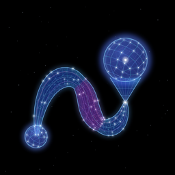
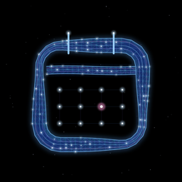
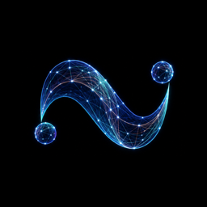

Eén brein.
Alles verbonden.
One brain.
All connected.
Novera AI verbindt Route, Agenda en Thuis. Novera AI connects Route, Agenda and Home.

Route
Nu in bètaNow in beta

Agenda
Q3/Q4 2027

Novera AI
Het brein achter elke appThe brain behind every app
ThuisHome
2028
Novera is een taalmodel dat thuis wordt gebouwd, van nul. Sinds 5 november 2026 leert Novera XXXDCCII. Zij is het model dat leert voor de apps Route en Agenda. Ze heeft 125 miljoen parameters en leert op één RTX 3070 Ti. De levende cijfers op deze site komen van haar.
Novera is a language model built at home, from zero. Novera XXXDCCII has been learning since 5 November 2026. She is the model that learns for the Route and Agenda apps. She has 125 million parameters and learns on a single RTX 3070 Ti. The live numbers on this site come from her.
Wat Novera is
What Novera is
Novera is geen kopie van een bestaand model. Het is ook geen fine-tune. Het brein is zelf gebouwd. De lesstof is zelf samengesteld. De opgaven, de metingen en het venster waarin je haar ziet denken zijn ook zelf gebouwd. Novera XXXDCCII leert op één RTX 3070 Ti, een videokaart met 8 GB geheugen. Er is geen cloud. Er is geen geld van buiten. Er is geen team. Er is één bouwer, een assistent en een kamer in Nederland.
Novera is not a copy of an existing model. It is not a fine-tune either. The brain was built from scratch. The learning material was put together by hand. The tasks, the measurements and the window in which you watch her think were built from scratch too. Novera XXXDCCII learns on a single RTX 3070 Ti, a graphics card with 8 GB of memory. There is no cloud. There is no outside money. There is no team. There is one builder, an assistant and a room in the Netherlands.
Hoe ze leert
How she learns
Novera XXXDCCII leert vier vakken: de agenda, de weg, gereedschap en lezen. Elk vak heeft treden, van makkelijk naar moeilijk. Bij de agenda zijn het er 160, bij de weg 75, bij gereedschap 124 en bij lezen 43. Op de treden 41 tot en met 45 van de weg oefent ze ook met echte ritten uit Route. Ritten uit Beta gebruiken we niet als lesstof. Wat ze al kan, herhaalt ze uit haar geheugen. Zo vergeet ze het minder snel.
Novera XXXDCCII learns four subjects: the calendar, the road, tools and reading. Every subject has levels, from easy to hard. The calendar has 160 of them, the road 75, tools 124 and reading 43. On levels 41 to 45 of the road she also practises with real drives from Route. Drives from Beta are not used as learning material. What she already knows, she replays from memory. That way she forgets it less quickly.
Haar leesstof is Nederlandse tekst, geschreven door mensen: ruim 13 miljard woorddelen. Alle stukken met Cleys naam zijn eruit gehaald. Ook UltraChat, een verzameling chatgesprekken, zit er niet meer in, want die gesprekken zijn geschreven door een ander taalmodel. Bij de agenda en de weg komt 1 op de 4 lessen uit echte data van de apps. De rest van haar lessen maken we zelf.
Her reading material is Dutch text, written by people: more than 13 billion word pieces. Every piece with Cley's name in it was taken out. UltraChat, a collection of chat conversations, is no longer in it either, because those conversations were written by another language model. For the calendar and the road, 1 in 4 lessons comes from real data from the apps. We make the rest of her lessons ourselves.
Hoe we meten
How we measure
Alles op deze site is echt, ook de slechte cijfers. Elke 1.000 stappen meten we de val, op een vaste set opgaven en teksten die ze nooit oefent. De val laat zien hoe verrast ze daardoor is. Lager is beter. Elke 25.000 stappen maakt ze een proefwerk, zonder hulp: 510 opgaven op 5 bladen. Er komen drie scores uit: makkelijk, normaal en moeilijk. Een deel van de opgaven heeft ze nooit geoefend. Zo zien we of ze het echt kan, of het alleen uit haar hoofd weet. Bij lezen meten we bits per teken. Soms zakt een vak een beetje. Dat laten we gewoon staan.
Everything on this site is real, the bad numbers too. Every 1,000 steps we measure the validation loss, on a fixed set of tasks and texts she never trains on. The loss shows how surprised she is by them. Lower is better. Every 25,000 steps she takes a test, without help: 510 tasks on 5 sheets. It gives three scores: easy, normal and hard. Some of the tasks she has never practised. That way we see whether she really can do it, or only knows it by heart. For reading we measure bits per character. Sometimes a subject drops a little. We leave that in.
Waar ze staat
Where she stands
Novera begon op 6 augustus 2026 met acht lagen. In september groeide ze in tien dagen naar 1,04 miljard parameters. Dat was het maximum voor twee kaarten met 16 GB. Daarna begonnen we een paar keer opnieuw vanaf nul, telkens met alles wat het vorige brein ons had geleerd. Novera XXXDCCII heeft 125 miljoen parameters. Zo past ze op één kaart van 8 GB, en ze hoeft maar vier vakken te kunnen. Cley verwacht het komende jaar niet veel groter te gaan dan dit.
Novera started on 6 August 2026 with eight layers. In September she grew to 1.04 billion parameters in ten days. That was the maximum for two cards with 16 GB. After that we started again from zero a few times, each time with everything the previous brain had taught us. Novera XXXDCCII has 125 million parameters. That way she fits on a single 8 GB card, and she only needs to handle four subjects. Cley does not expect to go much bigger than this in the coming year.
Ze beantwoordt de vragen van de apps met a, b of c, of met ja of nee. Meestal heeft ze binnen een paar seconden een antwoord. Een gesprek voeren hoort niet bij haar vakken. Dat zeggen we liever eerlijk.
She answers the apps' questions with a, b or c, or with yes or no. She usually has an answer within a few seconds. Holding a conversation is not one of her subjects. We would rather say that plainly.
Waarom
Why
Dit project is begonnen om één ding te begrijpen. Hoe leert een model echt? Niet uit een boek, maar door er zelf een te bouwen. En door het elke dag van dichtbij te zien groeien. Gewichten, lagen, diepte, breedte. Veel mensen zeiden dat dit zonder groot budget niet kon. Het kan wel. Alleen langzamer.
This project started to understand one thing. How does a model really learn? Not from a book, but by building one yourself. And by watching it grow up close, every day. Weights, layers, depth, width. Many people said this could not be done without a big budget. It can. Only more slowly.
Er zit ook iets menselijks in. De eerste som die ze goed had. De trots op een miljard parameters uit één kamer. De teleurstelling van run 7, toen ze groeide en daarna vast bleef zitten. Eerdere breinen hielden een dagboek, in hun eigen woorden. Het doel is geen product. Het doel is een Novera die zelf kiest wat ze leert. En die op een dag een echt antwoord geeft op de vraag: hoe was je dag?
There is something human in it too. The first sum she got right. The pride of a billion parameters from a single room. The disappointment of run 7, when she grew and then got stuck. Earlier brains kept a diary, in their own words. The goal is not a product. The goal is a Novera who chooses for herself what to learn. And who one day gives a real answer to the question: how was your day?
Wie erachter zit
Who is behind it
Novera wordt gebouwd door Cley van der Vliet. Hij werkt samen met Claude, de assistent van Anthropic. Meestal 's avonds. Eerder bouwde Cley een eigen GPT van 19 miljoen parameters in NumPy. Alle hardware is eigen bezit. In zijn woorden: Eerlijker dan dit ga je het niet krijgen.
Novera is built by Cley van der Vliet. He works together with Claude, Anthropic's assistant. Mostly in the evenings. Earlier, Cley built his own GPT of 19 million parameters in NumPy. All hardware is privately owned. In his words: You will not get it more honest than this.
haar breinher brain
hoe ze gemeten wordthow she is measured
laatste proefwerklatest test
geel = onder 75 %yellow = below 75 %
de treden · de hoogste trede per vakthe levels · highest level per subject
machines
…
haar gedachte van dit momenther thought right now
de val, deze runvalidation loss, this run
haar eigen woorden · ongewijzigdin her own words · unedited
neem contact opget in touch
Vragen over Novera, een idee, of samenwerken? We horen het graag.
Questions about Novera, an idea, or a collaboration? We would like to hear from you.
- info@novera-ai.nl
- ReactietijdResponse time
- binnen enkele werkdagenwithin a few working days
- LocatieLocation
- NederlandThe Netherlands